Ability Tree Strategies Alchemy Ability Branch
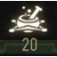 Alchemy (Ability Branch: 90 Points)
{kind=link}
Alchemy is the source of a Witcher’s fearsome crafting power. As training begins, Witcher candidates are mutated with lesser mutagens that enhance speed, endurance, strength, and grant the tremendous regenerative abilities required to imbibe the toxic decoctions they consume. This ancient knowledge is also used to brew potions, create bombs that can be thrown at targets with a large area of effect, and prepare sword oils that augment damage to specific breeds of monster. Don’t overlook a few of these abilities if you think you’re more comfortable creating a Combat or Signs-focused build, as certain Alchemy abilities (such as Synergy) offer incredible bonuses to any part of your Character Tree.
{kind=link}
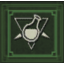 Brewing Abilities (4 Abilities, 18 Points)
{kind=link}
Enables the brewing and drinking of Witcher potions.

 Heightened Tolerance (5 Levels)
Heightened Tolerance (5 Levels)
Increases potion overdose threshold by the following additional amount:
| Level | Threshold (%) |
|---|---|
| 1 | 5% |
| 2 | 10% |
| 3 | 15% |
| 4 | 20% |
| 5 | 25% |
| Points in branch needed to unlock: 0 | |
Notes: Before choosing this ability, and the Acquired Tolerance in the Mutations branch, every potion and decoction you take adds to your Toxicity percentage. Reach over 80% Toxicity, and you lose Vitality; the “potion overdose threshold.” Hit 100% Toxicity, and you can’t drink any more potions and decoctions. Heightened Tolerance solves this problem (thus allowing more potions to be supped) by increasing the level at which you start losing Vitality due to Toxicity. However, your total Toxicity level does not change; making Acquired Tolerance more helpful as a first ability. Choose both in time, allowing you to easily drink four potions without poisoning yourself.
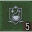 Refreshment (5 Levels)
{kind=link}
Each potion dose imbibed heals a percentage amount of maximum Vitality.
| Level | Amount (%) |
|---|---|
| 1 | 5% |
| 2 | 10% |
| 3 | 15% |
| 4 | 20% |
| 5 | 25% |
| Points in branch needed to unlock: 8 | |
Notes: Normally, to heal during combat, you would attempt to scarf down food, swig a Swallow potion, or use Quen Active Shield. For those well-versed in alchemy, having any potion grant you additional Vitality recovery is a fantastic way to gain a second use out of all your potions. You are also encouraged to raise your total Vitality (via green Mutagens or abilities) as the percentage increase is for your total health. The only problem is reaching a Toxicity level faster, so employ Heightened and Acquired Tolerance to help with this.
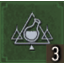 Delayed Recovery (3 Levels)
{kind=link}
Potion effects don’t wear off until potion Toxicity falls to a certain percentage amount of the maximum level.
| Level | Amount (%) |
|---|---|
| 1 | 90% |
| 2 | 80% |
| 3 | 70% |
| Points in branch needed to unlock: 20 | |
Notes: If you are investing into an Alchemist archetype, this ability is excellent for getting the most use out of your potions. For long fights, and if you’re willing to manage your toxicity with careful imbibing of potions, you can ensure you have multiple potions effects going for significantly longer than usual. Also employ other Abilities to ensure your Toxicity stays high without detrimental side effects, such as Acquired Tolerance.
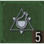 Side Effects (5 Levels)
{kind=link}
Imbibing a potion gives a percentage chance of activating the effects of another randomly-selected potion, without additional Toxicity cost.
Notes: This is another ability that is perfect for an alchemist archetype that is focusing on potion and decoction drinking to win battles, but isn’t usually taken by hybrid build characters. As the random nature of this ability means the secondary effects of potion may not be helpful (such as Killer Whale being activated in a fight on land), this means you need to know what the effect is, and what bonuses it gives you to get the most out of it. Other times, you receive a fantastic bonus that turns the tide in battle. Entertaining, rather than optimal.
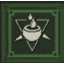 Oil Preparation (4 Abilities, 18 Points)
{kind=link}
Enables the creation of oils that can be applied to swords.
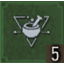 Poisoned Blades (5 Levels)
{kind=link}
Oil applied to blades gives a percentage chance of poisoning the target on each hit. The chance is greater the higher the level of oil used.
| Level | Chance (%) |
|---|---|
| 1 | 3% |
| 2 | 6% |
| 3 | 9% |
| 4 | 12% |
| 5 | 15% |
| Points in branch needed to unlock: 0 | |
Notes: If you’re using oils, you need to be using this! As long as you have the correct oil on a given enemy, there’s a chance you may poison your foe. This is especially useful against monsters that are the target of a Witcher contract, or foes that regenerate health. Don’t forget to further augment your chances by selecting blades with a poison chance (such as the Viper Venomous Swords) and the Morana Runestones.
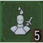 Protective Coating (5 Levels)
{kind=link}
Adds additional protection against attacks from the monster type the oil targets, as a percentage:
| Level | Added Protection (%) |
|---|---|
| 1 | 5% |
| 2 | 10% |
| 3 | 15% |
| 4 | 20% |
| 5 | 25% |
| Points in branch needed to unlock: 8 | |
Notes: Let’s assume you are diligent at learning how to craft all the available oils, and have a bestiary full of information regarding what oils to coat your blade with before each fight. Now you have the ability to shrug off up to a quarter of any damage a foe might inflict on you. Conjure Quen to further your cause, and you soon find a combination of defenses proves highly effective. Only refrain from this ability if you feel your dexterity at dodging and general avoidance of enemy strikes makes it moot.
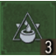 Fixative (3 Levels)
Fixative (3 Levels)
{kind=link}
Blade oils last an additional amount of time, as a percentage of the usual time:
| Level | Time (%) |
|---|---|
| 1 | 33% longer |
| 2 | 67% longer |
| 3 | Blade oils do not wear off |
| Points in branch needed to unlock: 20 | |
Notes: This is a straightforward ability to understand, and should be taken only if you’re finding that your oil is wearing off too soon during a fight. Level 3 of this ability may not be needed at all (especially as oils are relatively easy to craft); you don’t need to coat a weapon in oil once the foes you used it on are lying dead at your feet!
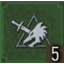 Hunter Instinct (5 Levels)
{kind=link}
When Adrenaline Points are at their maximum, critical hit damage against the targeted enemy type is increased by the following amount:
| Level | Increase (%) |
|---|---|
| 1 | 20% |
| 2 | 40% |
| 3 | 60% |
| 4 | 80% |
| 5 | 100% |
| Points in branch needed to unlock: 28 | |
Notes: Remember to coat oil on your chosen blade for this to be effective! Assuming you have maximum Adrenaline Points, or helpful abilities that quickly increase your APs (Combat abilities, Resolve, Razor Focus), then this can cause a huge amount of damage with a single strike. This favors a well-timed strong attack on a foe to ruin their chances of survival.
Bomb Creation (4 Abilities, 18 Points)
{kind=link}
Enables the creation of handheld bombs that can be thrown at enemies, or dropped down Monster Nests.
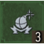 Steady Aim (3 Levels)
{kind=link}
Time is slowed a further percentage amount while aiming bombs, as follows:
| Level | Amount (%) |
|---|---|
| 1 | 15% |
| 2 | 30% |
| 3 | 45% |
| Points in branch needed to unlock: 0 | |
Notes: If you’re trying to manually aim bombs in a fight, and you’re finding yourself overwhelmed, especially against fast and aggressive enemy types, use Steady Aim: It allows you to take a little more time to perfect a throw, and score a maximum effect for every bomb you use. If, however, you’re finding you only use bombs occasionally, or you have quick enough manual dexterity, there are other, more important abilities to spend a hard-earned point on.
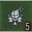 Pyrotechnics (5 Levels)
{kind=link}
All bombs, even those that usually do not inflict damage, now deal additional damage in addition to their normal effects, as follows:
| Level | Damage (Points) |
|---|---|
| 1 | +30 (Points) |
| 2 | +60 (Points) |
| 3 | +90 (Points) |
| 4 | +120 (Points) |
| 5 | +150 (Points) |
| Points in branch needed to unlock: 8 | |
Notes: While it’s always helpful to increase the damage every time something explodes next to an adversary, the amount of damage caused doesn’t scale as you increase in experience levels, meaning you could use other abilities to cause much greater damage compared to this. However, early on in your adventure, this is much more of a help.
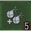 Efficiency (5 Levels)
{kind=link}
Increases the maximum number of bombs in each slot by the following:
| Level | Number (Bombs) |
|---|---|
| 1 | +1 |
| 2 | +2 |
| 3 | +3 |
| 4 | +4 |
| 5 | +5 |
| Points in branch needed to unlock: 20 | |
Notes: You’re usually able to carry up to four bombs of the same type in each quick menu slot, ready to be lobbed at enemies. Efficiency ups this total, so at Level 5 you’re able to carry nine bombs in either slot instead. That’s 18 bomb-throwing opportunities before you need to delve into your Inventory Menu to find more explosives! If you’re using bombs frequently, this is great, though it doesn’t increase potency or other effects at all, only what you can carry. If it’s taking more than eight bombs (four in each slot) to take down foes in a fight, choose this. If you can manage without a large amount of explosives in your breeches, ignore this (especially if you don’t have nine bombs to place in a slot!).
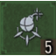 Cluster Bombs (5 Levels)
{kind=link}
Upon detonation, bombs separate into explosive fragments:
| Level | Fragments |
|---|---|
| 1 | 2 |
| 2 | 3 |
| 3 | 4 |
| 4 | 5 |
| 5 | 6 |
| Points in branch needed to unlock: 28 | |
| Level | Chance (%) |
|---|---|
| 1 | 20% |
| 2 | 40% |
| 3 | 60% |
| 4 | 80% |
| 5 | 100% |
| Points in branch needed to unlock: 28 | |
Notes: If you’re really pushing the plan to destroy foes purely by explosive warfare, this is the ultimate in dismemberment! Though you take damage if struck by your own bombs, it is usually worth it for the entertainment value alone. Interior locations with multiple foes become horrific dismemberment abattoirs! It essentially turns any bomb into up to six fragments that detonate with the same force as the main bomb. Remember that Grapeshot already separates before exploding, so the effects aren’t quite as severe. But for everything else, expect carnage!
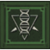 Mutation (4 Abilities, 18 Points)
{kind=link}
Enables the extraction of mutagens from the corpses of powerful monsters. Witchers use these to grant their bodies new abilities. Note these are distinct and different from the Mutations Menu.
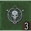 Acquired Tolerance (3 Levels)
{kind=link}
Every known particular level of an alchemy formula increases maximum Toxicity by 1.
| Level | Formula Level |
|---|---|
| 1 | 1 |
| 2 | 1 or 2 |
| 3 | 1, 2, or 3 |
| Points in branch needed to unlock: 0 | |
Notes: Before choosing this ability, and the Heightened Tolerance in the Brewing branch, every potion and decoction you take adds to your Toxicity percentage. Reach over 80% Toxicity, and you lose Vitality; the “potion overdose threshold.” Hit 100% Toxicity, and you can’t drink any more potions and decoctions. Acquired Tolerance solves this problem by raising your total Toxicity level. Even though you still lose Vitality when you reach 80% of your total Toxicity, that Toxicity is bigger (effectively doubled), and is therefore more helpful than Heightened Tolerance. Choose both in time, allowing you to easily drink four potions without poisoning yourself.
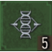 Tissue Transformation (5 Levels)
{kind=link}
When consumed, mutagen decoction increases maximum Vitality by a set number of points for decoction’s effective duration:
| Level | Increased Vitality (Points) |
|---|---|
| 1 | 200 (Points) |
| 2 | 400 (Points) |
| 3 | 600 (Points) |
| 4 | 800 (Points) |
| 5 | 1000 (Points) |
| Points in branch needed to unlock: 8 | |
Notes: If you’re experimenting with Decoctions, including drinking two at once to gain multiple bonuses during battle, and don’t want to worry too much about the Vitality drain from becoming to “toxic,” invest in this ability. If you’ve invested in the two “Tolerance” Alchemy abilities, this can up the number of decoctions, and grant you a huge bonus to your health (without it reducing due to you being poisoned by decoctions, as your threshold for tolerance is raised). Do you need more Vitality in a fight, and enjoy the taste of a decoction (or four)? Then pick this ability!
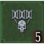 Synergy (5 Levels)
Synergy (5 Levels)
{kind=link}
Increases bonus for mutagen placed in mutagen slot by an additional amount, as follows:
| Level | Amount (%) |
|---|---|
| 1 | 10% |
| 2 | 20% |
| 3 | 30% |
| 4 | 40% |
| 5 | 50% |
| Points in branch needed to unlock: 20 | |
Notes: Want a potentially massive boost in mutagen effectiveness? Then access this ability. If you’ve spent points evenly between the Combat and Alchemy branches just to unlock this, then maximize this ability’s effectiveness. Geralt is a formidable monster in melee combat with the right mutagens! For example, let’s say you have a Greater Green Mutagen (+150 Vitality) in one of your four character slot areas, along with three Alchemy abilities (raising your Vitality to +600). Add a Level 5 Synergy, and you gain an additional 300 Vitality (+900). Are all four character slots using Greater Green Mutagens (with an all-Alchemy archetype)? Then your Vitality shoots up to +3,600! Remember this only applies to Green Mutagens.
 Adaptation (5 Levels)
Adaptation (5 Levels)
Extends effective duration of all mutagen decoctions by the following amount:
| Level | Amount (%) |
|---|---|
| 1 | 10% |
| 2 | 20% |
| 3 | 30% |
| 4 | 40% |
| 5 | 50% |
| Points in branch needed to unlock: 28 | |
Notes: Remember this only affects decoctions, rather than potions. If you’re Alchemy-based in your abilities, this is a superb skill to acquire, though you are encouraged to check whether decoctions are running out during combat first. If you need the extra time, or wish to move from combat to combat with decoctions working continuously (and have the Toxicity tolerance to help cope with the Vitality drains), this is a great idea. Otherwise, you may wish to ignore this for other abilities (especially if you find decoctions easy to craft).
 Trial Of The Grasses (4 Abilities, 18 Points)
Trial Of The Grasses (4 Abilities, 18 Points)
Mutation that lets Witchers withstand the toxicity of potions that would kill normal people. Note these are distinct and different from the Mutations Menu.
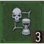 Frenzy (3 Levels)
{kind=link}
If potion Toxicity is above 0, time automatically slows when an enemy is about to perform a counterattack. The slowing effect and duration increase as follows:
| Level | Slowing Effect and Duration |
|---|---|
| 1 | Does not increase |
| 2 | Greater than level 1 |
| 3 | Greater than level 2 |
| Points in branch needed to unlock: 0 | |
Notes: If you’re known to partake in copious potion-chugging, this is amazingly useful; the ability to read when an enemy is about to counter-attack, and have the time to properly react to it, can be game-changing. So long as you have potions to use, you can receive something positive out of the Toxicity that is building up inside Geralt. However, later into your adventure, when you’ve correctly timed your parrying, this becomes less useful, as it is highly situational.
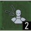 Endure Pain (5 Levels)
{kind=link}
Increases maximum Vitality by the following amount, when Toxicity exceeds the safe threshold:
| Level | Amount (%) |
|---|---|
| 1 | 10% |
| 2 | 20% |
| 3 | 30% |
| 4 | 40% |
| 5 | 50% |
| Points in branch needed to unlock: 8 | |
Notes: This ability remains dormant at all times until the decoctions and potions you’ve taken cause your Toxicity tolerance levels to be reached. Instead of a large Vitality loss and a slow reduction in your health, your Vitality increases instead. There are other ways to stop Vitality loss (the “Tolerance” abilities for example), making this less effective, especially if you don’t take multiple potions and decoctions in every fight. But if you do, and don’t have the Vitality to finish a fight while being poisoned by your own drinking habits, choose this ability.
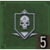 Fast Metabolism (5 Levels)
{kind=link}
Toxicity drops by a set number of points per second faster than normal.
| Level | Points per Second |
|---|---|
| 1 | 1 (Point per Second) |
| 2 | 2 (Points per Second) |
| 3 | 3 (Points per Second) |
| 4 | 4 (Points per Second) |
| 5 | 5 (Points per Second) |
| Points in branch needed to unlock: 20 | |
Notes: This ostensibly allows you to swig down more potions and decoctions so your Vitality losses once you reach unsafe Toxicity levels are minimized.
While this sounds great in theory, and is a good choice if you aren’t building a character that is utilizing linked alchemy abilities to flirt with keeping Toxicity high, it usually isn’t necessary if you’ve purchased Acquired Tolerance, or simply don’t drink multiple decoctions in a fight (to reach unsafe levels). It is also one of the few abilities that shouldn’t be partnered with another ability; Delayed Reaction is far less effective if your Toxicity reduction is sped up.
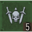 Killing Spree (5 Levels)
{kind=link}
If potion Toxicity is above 0, each opponent killed increases the chance for a critical hit by an additional amount, as follows:
| Level | Amount (%) |
|---|---|
| 1 | 5% |
| 2 | 10% |
| 3 | 15% |
| 4 | 20% |
| 5 | 25% |
| Points in branch needed to unlock: 28 | |
Notes: This works with potions rather than decoctions, and basically allows you a greater chance of scoring a critical hit for bonus damage. This is highly situational (you need to have used potions so your Toxicity is over zero, and you need to have a good Critical Damage bonus once the hit actually wounds a foe), but it does stack with your other attacks that have a critical hit chance. The biggest problem is the large number of points needed to access Killing Spree. After 28 ability points are spent, you may well be defeating foes without the need for this extra critical hit chance, and there are much more potent Alchemy abilities to spend your points on (like Synergy).
The Witcher® is a trademark of CD PROJEKT S. A. The Witcher game © CD PROJEKT S. A. All rights reserved. The Witcher game is based on a novel by Andrzej Sapkowski. All other copyrights and trademarks are the property of their respective owners. Learn more at thewitcher.com.